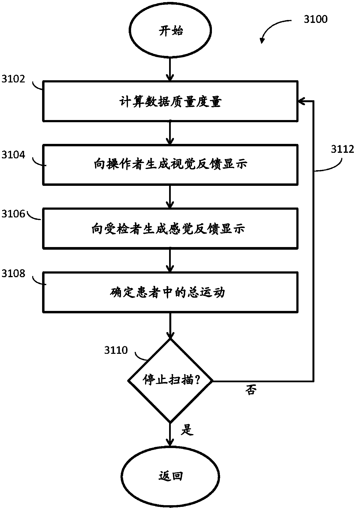

发明名称--MRI中的运动的实时监测和预测
| 申请号 | CN201880017041.8 | 申请日 | 2018.03.08 | ||
| 公开（公告）号 | CN110741440A | 公开（公告）日 | 2020.01.31 | ||
| IPC分类号 | G16H30/00; G06T7/20; G06T7/30; A61B5/055 | 申请（专利权）人 | 华盛顿大学;俄勒冈健康与科学大学; | ||
| 发明人 | N·杜森巴克;J·科勒;A·范;A·斯奈德;A·米罗;D·费尔;E·厄尔;R·克莱因;O·M·多明格斯;A·佩罗尼; | 优先权号 | US62/468,858 |
摘要:
摘要附图:
